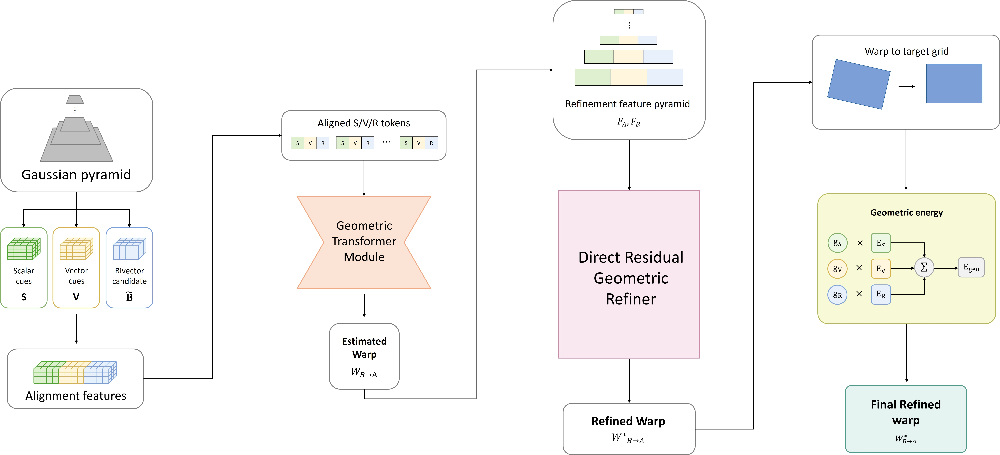

Journal Manuscript · Under Review
A Clifford-Structured Geometric Transformer for Rotation-Aware Geometric Alignment
A grade-aware dense correspondence framework that separates scalar, vector, and rotor-related cues to study geometric alignment under severe in-plane rotation.
- Problem
- Dense geometric alignment under severe in-plane rotation and ambiguous visual evidence.
- Approach
-
- Clifford Algebra inspired representation supports dense correspondence estimation.
- The framework combines scalar, vector, and bivector cues in a geometric transformer.
- Direct residual correction and energy-based refinement improve geometric consistency.
- My Role
- Conceptualization, methodology, software, validation, formal analysis, investigation, data curation, visualization, and original manuscript drafting.